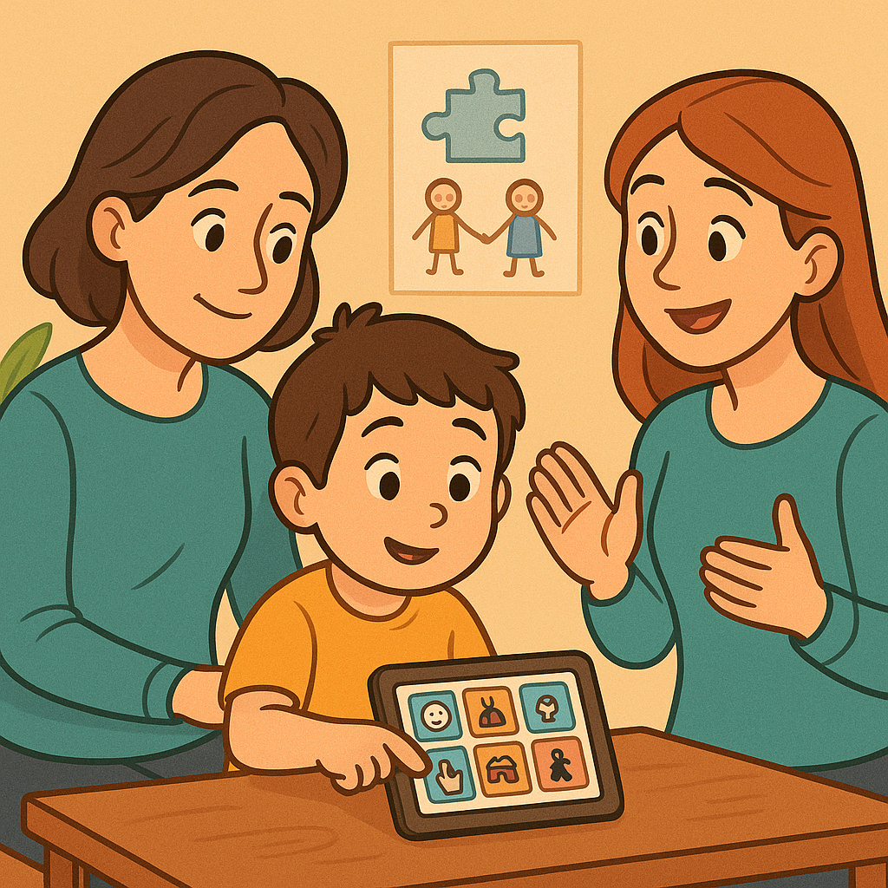

Terapias e Abordagens
Terapias e Abordagens
11 de novembro de 2025

Falar é apenas uma das formas de se comunicar. Para muitas CRIANÇAS COM AUTISMO, a linguagem verbal pode ser um desafio, mas isso não significa que elas não tenham o que dizer. Pelo contrário, há um mundo inteiro de pensamentos, emoções e vontades esperando para ser compreendido. E é justamente aí que entra a CAA (Comunicação Alternativa e Aumentativa), uma ferramenta que tem revolucionado a forma como a TERAPIA ABA é aplicada e como as famílias vivenciam o desenvolvimento de seus filhos.
Na HD 360 MOINHOS, CLÍNICA ESPECIALIZADA EM AUTISMO EM PORTO ALEGRE, a CAA é mais do que um método, é um elo de conexão entre o que a criança sente e o que o mundo precisa entender. Através dela, a comunicação deixa de ser uma barreira e se transforma em ponte. Uma ponte construída com respeito, paciência e ciência.
Muitas famílias chegam à HD 360 MOINHOS com o mesmo relato: “meu filho quer se comunicar, mas não consegue”. Essa dificuldade é uma das características mais marcantes do Transtorno do Espectro Autista (TEA). No entanto, a ausência da fala não é sinônimo de ausência de comunicação.
A CAA surge como uma ferramenta para dar voz às crianças que ainda não falam, e ampliar as possibilidades daquelas que já utilizam algumas palavras. Ela pode ser feita por meio de gestos, símbolos, pranchas, cartões visuais, aplicativos e até recursos eletrônicos que “falam” pela criança.
No contexto da TERAPIA ABA, o uso da CAA é integrado de forma estratégica, ajudando o terapeuta a identificar comportamentos, reforçar intenções comunicativas e ensinar novas formas de interação. Cada avanço, por menor que pareça, representa uma vitória imensa para a criança e para a família.
Em PORTO ALEGRE, a HD 360 MOINHOS tem se destacado como referência em CAA e TERAPIA ABA, justamente por unir conhecimento técnico, sensibilidade e personalização do atendimento.
A comunicação é uma necessidade humana fundamental. É por meio dela que expressamos o que sentimos, pedimos o que precisamos e nos conectamos com o outro. Quando uma criança com autismo não consegue se comunicar, ela tende a manifestar frustração, o que pode se refletir em crises, isolamento e dificuldades de aprendizado.
A CAA atua diretamente nesse ponto. Ela oferece meios alternativos para expressar desejos, pensamentos e emoções, criando novas oportunidades para o aprendizado e o convívio social.
Imagine uma criança que, pela primeira vez, consegue mostrar o cartão de “água” quando está com sede, ou o de “brincar” quando quer interagir. Esses pequenos gestos carregam um significado enorme: a criança se sente compreendida. E quando há compreensão, há desenvolvimento.
A TERAPIA ABA, ao lado da CAA, possibilita que esse processo ocorra de forma estruturada, reforçando comportamentos positivos e facilitando a generalização das habilidades para o dia a dia.
Na HD 360 MOINHOS, o trabalho com CAA é conduzido por uma equipe multidisciplinar composta por psicólogos, terapeutas ocupacionais, fonoaudiólogos e analistas do comportamento. Todos atuam de forma integrada, com um único objetivo: promover autonomia e qualidade de vida às CRIANÇAS COM AUTISMO.
A clínica, localizada em uma das regiões mais acessíveis de PORTO ALEGRE, foi pensada para acolher. Cada sala, cada cor e cada estímulo do ambiente são planejados para proporcionar conforto sensorial e estimular a comunicação.
Mas o diferencial não está apenas na estrutura, está na forma como a equipe se conecta com cada criança. Aqui, cada progresso é comemorado, cada gesto é valorizado e cada conquista é motivo de celebração.
O método aplicado combina TERAPIA ABA com técnicas de CAA, permitindo que o processo terapêutico vá além das palavras. Assim, a criança não apenas aprende a se comunicar, mas descobre o prazer de ser compreendida.
A CAA não é um conjunto fixo de ferramentas, mas sim um sistema dinâmico adaptado a cada criança. Na HD 360 MOINHOS, o processo começa com uma avaliação individualizada, onde a equipe identifica quais recursos comunicativos são mais adequados para o perfil e o nível de desenvolvimento da criança.
Algumas utilizam pictogramas (figuras que representam objetos, ações ou sentimentos), outras se beneficiam de tecnologias assistivas, como tablets e aplicativos que emitem sons correspondentes às figuras escolhidas. Há ainda aquelas que encontram na linguagem corporal e nos gestos um caminho inicial de comunicação.
O mais importante é que o sistema escolhido faça sentido para a criança e possa ser integrado à sua rotina. Isso inclui não apenas o ambiente da clínica, mas também a escola e a casa, para que a comunicação se torne parte natural do cotidiano.
Esse trabalho conjunto entre família e equipe terapêutica é uma das chaves do sucesso da TERAPIA ABA associada à CAA.
Poucas coisas são tão emocionantes quanto ver uma criança, antes silenciosa, conseguir expressar seus desejos pela primeira vez. Muitos pais relatam momentos marcantes, como o dia em que o filho apontou para o cartão “mamãe” ou conseguiu dizer “quero colo”.
Na HD 360 MOINHOS, esses instantes são tratados como verdadeiros marcos do desenvolvimento. Porque comunicar é mais do que trocar palavras, é criar vínculo.
E é justamente isso que diferencia o trabalho da CLÍNICA ESPECIALIZADA EM AUTISMO EM PORTO ALEGRE: a compreensão de que cada comunicação é uma forma de conexão emocional.
O uso da CAA não apenas melhora o comportamento e o aprendizado, mas transforma a relação entre a criança e sua família, fortalecendo laços e ressignificando a rotina.
O impacto da CAA associada à TERAPIA ABA é comprovado por resultados visíveis. As crianças passam a demonstrar maior interesse pelo ambiente, aumentam o contato visual, participam mais das atividades e reduzem comportamentos desafiadores.
Essas mudanças não ocorrem por acaso, elas são fruto de um trabalho contínuo, planejado e baseado em evidências científicas.
Cada criança tem seu próprio tempo, e a equipe da HD 360 MOINHOS entende que o progresso não deve ser medido apenas pela fala, mas pela capacidade de comunicar-se e compreender o mundo ao redor.
Essa abordagem humanizada, aliada ao conhecimento técnico, é o que faz da clínica uma referência em AUTISMO em PORTO ALEGRE.
A CAA não funciona isoladamente. O envolvimento da família é essencial para que as conquistas sejam consolidadas fora da clínica.
Por isso, na HD 360 MOINHOS, os pais são parte ativa do processo. Eles recebem orientação sobre como aplicar os recursos de CAA em casa, como reagir às tentativas de comunicação da criança e como reforçar positivamente cada novo avanço.
Essa parceria fortalece o aprendizado e cria um ambiente seguro para que a criança continue se desenvolvendo. Afinal, o lar é o primeiro espaço de expressão, e quando os pais participam, a evolução acontece de forma muito mais natural.
Outro aspecto fundamental do trabalho da HD 360 MOINHOS é a integração entre clínica, escola e sociedade. A CAA e a TERAPIA ABA não são eficazes apenas em sessões terapêuticas; elas precisam estar presentes na vida cotidiana da criança.
A equipe da clínica frequentemente estabelece contato com professores e cuidadores, orientando sobre o uso das ferramentas de CAA em sala de aula e sobre como promover interações sociais significativas.
Em PORTO ALEGRE, essa parceria tem transformado não apenas a vida das CRIANÇAS COM AUTISMO, mas também a forma como escolas e educadores compreendem o autismo.
Por trás de cada plano terapêutico, há uma equipe que acredita na capacidade de cada criança de evoluir. A HD 360 MOINHOS trabalha com a convicção de que toda criança é capaz de aprender, desde que receba o suporte certo, no momento certo.
O uso da CAA é uma demonstração prática desse princípio. É o reconhecimento de que a comunicação vai além da fala e de que o amor e a paciência também são linguagens poderosas.
Na clínica, a rotina é movida por histórias reais de superação. Crianças que chegaram tímidas, com dificuldades de interação, hoje conseguem participar de conversas, demonstrar emoções e compartilhar experiências.
Essas transformações inspiram outras famílias e reforçam o compromisso da HD 360 MOINHOS com a missão de oferecer o melhor tratamento para o autismo em PORTO ALEGRE.
A CAA não é apenas uma ferramenta terapêutica, é um símbolo de inclusão. Quando uma criança com autismo é capaz de se expressar, ela passa a participar de forma mais ativa da sociedade.
Em um mundo ainda tão pautado pela fala, é essencial compreender que comunicar é muito mais do que falar. É ser ouvido, compreendido e respeitado em sua singularidade.
A HD 360 MOINHOS acredita que cada avanço individual representa um passo coletivo em direção a uma sociedade mais inclusiva, onde todas as formas de comunicação são valorizadas.
A CAA mostra que o silêncio pode falar, e que o olhar pode dizer mais do que mil palavras. Quando usada com sensibilidade e estratégia, ela transforma a vida das CRIANÇAS COM AUTISMO e das famílias que convivem com elas.
Em PORTO ALEGRE, a HD 360 MOINHOS é referência em unir TERAPIA ABA e CAA para promover o desenvolvimento integral, emocional e social das crianças.
Mais do que uma CLÍNICA ESPECIALIZADA EM AUTISMO EM PORTO ALEGRE, a HD 360 é um espaço de transformação, onde cada gesto é valorizado e cada conquista é motivo de celebração.
Se você é pai, mãe ou responsável por uma criança com autismo e busca um acompanhamento humano, técnico e eficaz, venha conhecer a HD 360 MOINHOS.
Aqui, a comunicação vai além das palavras, ela se transforma em conexão, aprendizado e amor.